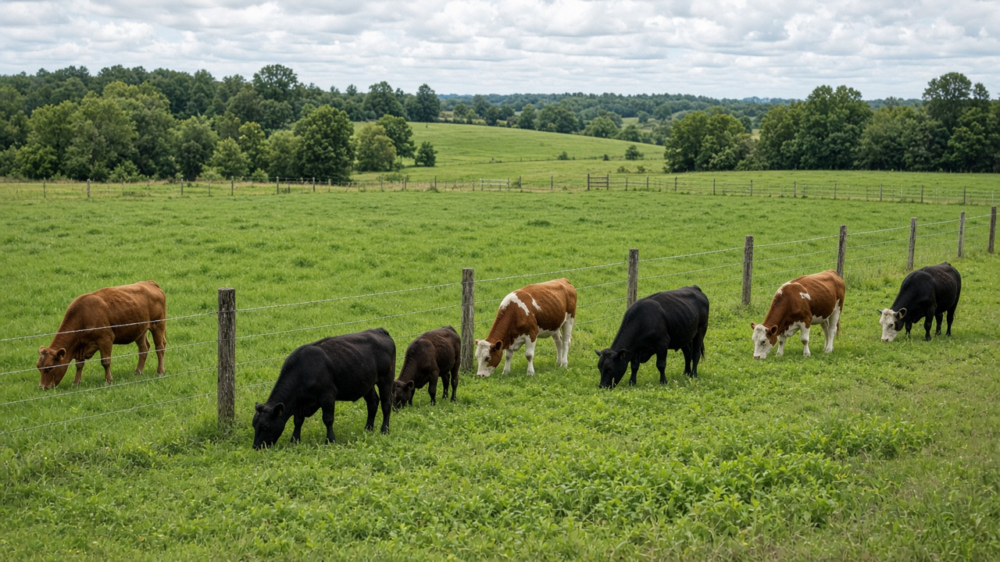
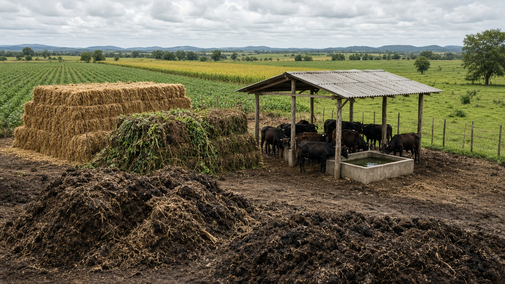
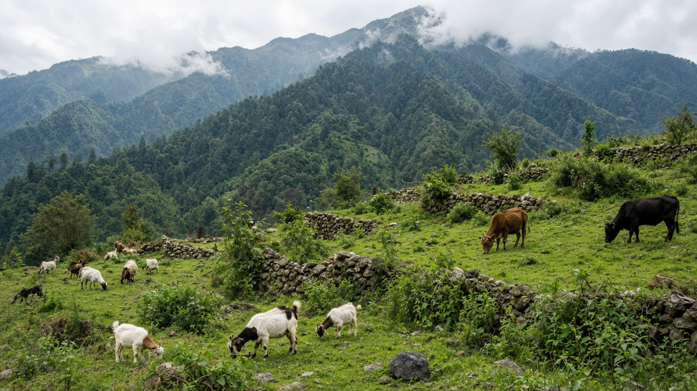

Sustainable Livestock and Pasture Management
Published on August 20, 2026

Sustainable livestock production balances animal welfare, environmental stewardship, and economic viability for herders and ranchers worldwide. Well-managed pastures provide nutritious forage while maintaining soil cover, root systems, and biodiversity that prevent degradation. Rotational grazing moves animals through paddocks in planned sequences, allowing grasses to recover between grazing periods and reducing weed dominance. Matching stocking rates to carrying capacity of the land avoids overgrazing that compacts soil, erodes hillsides, and depletes water sources in arid regions. Herders who plan grazing calendars around seasonal rainfall patterns maintain healthier pastures year after year.
Integrated crop-livestock systems recycle nutrients by feeding animals crop residues and returning manure to fields as organic fertilizer. Improved feed quality and health management reduce methane emissions per unit of meat or milk produced. Access to clean water, shade structures, and veterinary care upholds animal welfare standards expected by consumers and certification bodies. Native breed conservation preserves genetic diversity adapted to local diseases, climates, and feed resources that industrial breeds may not tolerate. Pasture rest periods and diversified forage species improve soil health and extend the productive life of grazing lands.
Market incentives for grass-fed, organic, or welfare-certified products help producers capture premiums that reflect sustainable practices. Research on silvopasture and multi-species grazing demonstrates how trees and diverse forages can enhance productivity while sequestering carbon. Policy frameworks address land rights for pastoral communities, conflict resolution with wildlife, and controls on antibiotic use in food animals. By managing herds as part of broader agroecosystems rather than isolated feedlot operations, sustainable pasture management supports nutritious diets and resilient rural economies. Veterinarians and herders who collaborate on preventive health care reduce disease outbreaks and improve animal welfare across entire regions.

दिगो पशुपालनले विश्वभरका चरवाहा र पशुपालकका लागि पशु कल्याण, वातावरणीय संरक्षण र आर्थिक व्यवहार्यता सन्तुलन गर्छ। राम्रोसँग व्यवस्थित चरन क्षेत्रले पोषिलो चारा उपलब्ध गराउँछ, साथै माटो आवरण, जरा प्रणाली र जैविक विविधता कायम राखेर क्षरण रोक्छ। चरणबद्ध चरनले पशुलाई योजनाबद्ध क्रममा विभिन्न चरन क्षेत्रमा सार्छ, चरन अवधिबीच घाँस पुन: उम्रन पाउँछ र झारीको प्रभुत्व घट्छ। भूमिको बोक्ने क्षमतासँग मिल्ने पशु संख्या राख्दा अधिक चरन रोकिन्छ, जसले माटो कडा हुने, ढलान क्षरण हुने र शुष्क क्षेत्रका पानी स्रोत सुक्ने समस्या टार्छ। मौसमी वर्षाको समयानुसार चरन पात्रो बनाउने चरवाहाले वर्षभरि स्वस्थ चरन क्षेत्र कायम राख्छन्।
एकीकृत बाली-पशु प्रणालीले बाली अवशेष पशुलाई खुवाएर र गोबर खेतमा जैविक मलको रूपमा फर्काएर पोषक तत्व पुन: चक्रण गर्छ। सुधारिएको चारा गुणस्तर र स्वास्थ्य व्यवस्थापनले उत्पादित मासु वा दूध प्रति इकाई मिथेन उत्सर्जन घटाउँछ। स्वच्छ पानी, छायाँ संरचना र पशु चिकित्सा सेवाको पहुँचले उपभोक्ता र प्रमाणीकरण निकायले अपेक्षा गरेका पशु कल्याण मापदण्ड पूरा गर्छ। स्वदेशी जात संरक्षणले स्थानीय रोग, जलवायु र चारा स्रोतमा अनुकूल आनुवंशिक विविधता जोगाउँछ, जुन औद्योगिक जातले सहन नगर्न सक्छ। चरन विश्राम अवधि र विविध चारा प्रजातिले माटो स्वास्थ्य सुधार्छ र चरन भूमिको उत्पादक जीवन लम्ब्याउँछ।
घाँस-खुवाएको, जैविक वा कल्याण-प्रमाणित उत्पादनका लागि बजार प्रोत्साहनले उत्पादकहरूलाई दिगो अभ्यास प्रतिबिम्बित गर्ने अतिरिक्त मूल्य कब्जा गर्न मद्दत गर्छ। वन-चरन र बहु-प्रजाति चरन सम्बन्धी अनुसन्धानले रूख र विविध चाराले उत्पादकता बढाउँदै कार्बन कसरी भण्डारण गर्छन् भनी देखाउँछ। नीतिगत ढाँचाले चरवाहा समुदायको भूमि अधिकार, वन्य जीवसँगको द्वन्द्व समाधान र खाद्य पशुमा एन्टिबायोटिक प्रयोग नियन्त्रण सम्बोधन गर्छ। पशु समूहलाई अलग फिडलट सञ्चालन होइन, व्यापक कृषि-पारिस्थितिक प्रणालीको अंशका रूपमा व्यवस्थापन गर्दा, दिगो चरन व्यवस्थापनले पोषिलो आहार र लचिलो ग्रामीण अर्थतन्त्र समर्थन गर्छ। निवारक स्वास्थ्य सेवामा सहकार्य गर्ने पशु चिकित्सक र चरवाहाले सम्पूर्ण क्षेत्रमा रोग प्रकोप घटाउँछन् र पशु कल्याण सुधार गर्छन्।

टिकाऊ पशुपालन विश्व भर चरवाहों और पशुपालकों के लिए पशु कल्याण, पर्यावरण संरक्षण और आर्थिक व्यवहार्यता का संतुलन करता है। अच्छी प्रबंधित चरागाह पौष्टिक चारा उपलब्ध कराती हैं, साथ ही मिट्टी आवरण, जड़ प्रणाली और जैव विविधता बनाए रखकर क्षरण रोकती हैं। चरणबद्ध चरन पशुओं को योजनाबद्ध क्रम में विभिन्न चरागाहों में ले जाता है, चरन अवधि के बीच घास पुन: उगने पाती है और झाड़ी का प्रभुत्व घटता है। भूमि की वहन क्षमता के अनुरूप पशु संख्या रखने पर अधिक चरन रोकी जाती है, जो मिट्टी को कठोर होने, ढलान कटाव और शुष्क क्षेत्र में जल स्रोत सुखने से बचाती है। मौसमी वर्षा के समयानुसार चरन कैलेंडर बनाने वाले चरवाहे साल भर स्वस्थ चरागाह बनाए रखते हैं।
एकीकृत फसल-पशु प्रणाली फसल अवशेष पशुओं को खिलाकर और गोबर खेत में जैविक उर्वरक के रूप में लौटाकर पोषक तत्व का पुन: चक्रण करती है। सुधारित चारा गुणवत्ता और स्वास्थ्य प्रबंधन उत्पादित मांस या दूध प्रति इकाई मीथेन उत्सर्जन घटाते हैं। स्वच्छ पानी, छाया संरचना और पशु चिकित्सा सेवा की पहुँच उपभोक्ता और प्रमाणीकरण निकाय की अपेक्षा पूरी करती है। स्वदेशी किस्म संरक्षण स्थानीय रोग, जलवायु और चारा संसाधनों में अनुकूल आनुवंशिक विविधता बचाता है, जिसे औद्योगिक किस्में सहन नहीं कर सकतीं। चरागाह विश्राम अवधि और विविध चारा प्रजातियाँ मिट्टी स्वास्थ्य सुधारती हैं और चरागाह भूमि के उत्पादक जीवन को लम्बा करती हैं।
घास-खिलाए, जैविक या कल्याण-प्रमाणित उत्पादों के लिए बाज़ार प्रोत्साहन उत्पादकों को टिकाऊ अभ्यास प्रतिबिंबित करने वाला अतिरिक्त मूल्य कब्जा करने में मदद करते हैं। वन-चरन और बहु-प्रजाति चरन पर अनुसंधान दिखाता है कि पेड़ और विविध चारा उत्पादकता बढ़ाते हुए कार्बन कैसे भंडारित करते हैं। नीतिगत ढाँचे चरवाहा समुदाय के भूमि अधिकार, वन्य जीव से विवाद समाधान और खाद्य पशुओं में एंटीबायोटिक उपयोग नियंत्रण को संबोधित करते हैं। पशु झुंड को अलग फीडलट संचालन नहीं, व्यापक कृषि-पारिस्थितिक प्रणाली का हिस्सा मानकर प्रबंधित करने पर, टिकाऊ चरागाह प्रबंधन पौष्टिक आहार और लचीली ग्रामीण अर्थव्यवस्था का समर्थन करता है। निवारक स्वास्थ्य देखभाल में सहयोग करने वाले पशु चिकित्सक और चरवाहे पूरे क्षेत्र में रोग प्रकोप घटाते हैं और पशु कल्याण सुधारते हैं।